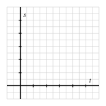

Section1.3La Tasa de Cambio Promedio de una Función
Motivating Questions
¿Qué queremos decir con la tasa de cambio promedio de una función en un intervalo?
¿Qué mide la tasa de cambio promedio de una función? ¿Cómo interpretamos su significado en contexto?
¿Cómo está conectada la tasa de cambio promedio de una función con una línea que pasa por dos puntos en la curva?
Dada una función que modela un cierto fenómeno, es natural hacer preguntas como “¿cómo está cambiando la función en un intervalo dado?” o “¿en qué intervalo está cambiando la función más rápidamente?” El concepto de tasa de cambio promedio nos permite hacer estas preguntas más precisas matemáticamente. Inicialmente, nos enfocaremos en la tasa de cambio promedio de un objeto que se mueve a lo largo de un camino en línea recta.
Para una función \(s\) que indica la ubicación de un objeto en movimiento a lo largo de un camino recto en el tiempo \(t\text{,}\) definimos la tasa de cambio promedio de \(s\) en el intervalo \([a,b]\) como la cantidad
Nota especialmente que la tasa de cambio promedio de \(s\) en \([a,b]\) mide el cambio en la posición dividido por el cambio en el tiempo.
Preview Activity1.3.1.
Sea la función de altura para una pelota lanzada verticalmente dada por \(s(t) = 64 - 16(t-1)^2\text{,}\) donde \(t\) se mide en segundos y \(s\) se mide en pies sobre el suelo.
Calcula el valor de \(AV_{[1.5,2.5]}\text{.}\)
¿Cuáles son las unidades de la cantidad \(AV_{[1.5,2.5]}\text{?}\) ¿Cuál es el significado de este número en el contexto de la pelota que sube y baja?
En Desmos, grafica la función \(s(t) = 64 - 16(t-1)^2\) junto con los puntos \((1.5,s(1.5))\) y \((2.5, s(2.5))\text{.}\) Haz una copia de tu gráfico en los ejes en Figura 1.3.1, etiquetando puntos clave así como la escala en tus ejes. ¿Cuál es el dominio del modelo? ¿El rango? ¿Por qué?

Figure1.3.1.Ejes para graficar la función de posición.
Trabaja a mano para encontrar la ecuación de la línea que pasa por los puntos \((1.5,s(1.5))\) y \((2.5, s(2.5))\text{.}\) Escribe la línea en la forma \(y = mt + b\) y grafica la línea en Desmos, así como en los ejes anteriores.
¿Cuál es una interpretación geométrica del valor \(AV_{[1.5,2.5]}\) a la luz de tu trabajo en las preguntas anteriores?
¿Cómo cambian tus respuestas en las preguntas anteriores si en lugar de eso consideramos el intervalo \([0.25, 0.75]\text{?}\)\([0.5, 1.5]\text{?}\)\([1,3]\text{?}\)
Subsection1.3.1Definiendo e interpretando la tasa de cambio promedio de una función
En el contexto de una función que mide la altura o posición de un objeto en movimiento en un momento dado, el significado de la tasa de cambio promedio de la función en un intervalo dado es la velocidad promedio del objeto en movimiento porque es la razón entre el cambio en la posición y el cambio en el tiempo. Por ejemplo, en Actividad de Vista Previa 1.3.1, las unidades de \(AV_{[1.5,2.5]} = -32\) son “pies por segundo” ya que las unidades en el numerador son “pies” y en el denominador “segundos”. Además, \(-32\) es numéricamente el mismo valor que la pendiente de la línea que conecta los dos puntos correspondientes en el gráfico de la función de posición, como se ve en Figura 1.3.2. El hecho de que la tasa de cambio promedio sea negativa en este ejemplo indica que la pelota está cayendo.
Figure1.3.3.La tasa de cambio promedio de una función abstracta \(f\) en el intervalo \([a,b]\text{.}\)
Mientras que la tasa de cambio promedio de una función de posición nos dice la velocidad promedio del objeto en movimiento, en otros contextos, la tasa de cambio promedio de una función puede definirse de manera similar y tiene una interpretación relacionada. Hacemos la siguiente definición formal.
Definition1.3.4.
Para una función \(f\) definida en un intervalo \([a,b]\text{,}\) la tasa de cambio promedio de \(f\) en \([a,b]\) es la cantidad
En cada situación, las unidades de la tasa de cambio promedio nos ayudan a interpretar su significado, y esas unidades son siempre “unidades de salida por unidad de entrada.” Además, la tasa de cambio promedio de \(f\) en \([a,b]\) siempre corresponde a la pendiente de la línea entre los puntos \((a,f(a))\) y \((b,f(b))\text{,}\) como se ve en Figura 1.3.3.
Activity1.3.2.
Según el censo de EE. UU., las poblaciones de los condados de Kent y Ottawa en Michigan, donde se encuentra GVSU 1
Grand Rapids está en Kent, Allendale en Ottawa.
desde 1960 hasta 2010, medidas en intervalos de \(10\) años, se presentan en las siguientes tablas.
Table1.3.5.Datos de población del condado de Kent.
1960
1970
1980
1990
2000
2010
363,187
411,044
444,506
500,631
574,336
602,622
Table1.3.6.Datos de población del condado de Ottawa.
1960
1970
1980
1990
2000
2010
98,719
128,181
157,174
187,768
238,313
263,801
Sea \(K(Y)\) la población del condado de Kent en el año \(Y\) y \(W(Y)\) la población del condado de Ottawa en el año \(Y\text{.}\)
Calcula \(AV_{[1990,2010]}\) para ambos \(K\) y \(W\text{.}\)
¿Cuáles son las unidades de cada una de las cantidades que calculaste en (a.)?
Escribe una frase cuidadosa que explique el significado de la tasa de cambio promedio de la población del condado de Ottawa en el intervalo de tiempo \([1990,2010]\text{.}\) Tu frase debería comenzar algo así: “En un año promedio entre 1990 y 2010, la población del condado de Ottawa fue \(\ldots\)”
¿Qué condado tuvo una mayor tasa de cambio promedio durante el intervalo de tiempo \([2000,2010]\text{?}\) ¿Hubo algún intervalo en el que uno de los condados tuviera una tasa de cambio promedio negativa?
Usando los datos proporcionados, ¿qué predices que será la población del condado de Ottawa en 2018? ¿Por qué?
La tasa de cambio promedio de una función en un intervalo nos proporciona una excelente manera de describir cómo se comporta la función, en promedio. Por ejemplo, si calculamos \(AV_{[1970,2000]}\) para el condado de Kent, encontramos que
lo que nos dice que en un año promedio desde 1970 hasta 2000, la población del condado de Kent aumentó en aproximadamente \(5443\) personas. Dicho de otra manera, también podríamos decir que de 1970 a 2000, el condado de Kent estaba creciendo a una tasa promedio de \(5443\) personas por año. Estas ideas también permiten la oportunidad de hacer comparaciones a lo largo del tiempo. Dado que
no solo podemos decir que la población del condado de Kent aumentó en aproximadamente \(7370\) en un año promedio entre 1990 y 2000, sino también que la población estaba creciendo más rápido de 1990 a 2000 que de 1970 a 2000.
Finalmente, podemos incluso usar la tasa de cambio promedio de una función para predecir el comportamiento futuro. Dado que la población estaba cambiando en promedio en \(7370.5\) personas por año desde 1990 hasta 2000, podemos estimar que la población en 2002 es
Subsection1.3.2Cómo la tasa de cambio promedio indica tendencias en la función
Ya hemos visto que es natural usar palabras como “creciendo” y “disminuyendo” para describir el comportamiento de una función. Por ejemplo, para la pelota de tenis cuya altura está modelada por \(s(t) = 64 - 16(t-1)^2\text{,}\) calculamos que \(AV_{[1.5,2.5]} = -32\text{,}\) lo que indica que en el intervalo \([1.5,2.5]\text{,}\) la altura de la pelota de tenis está disminuyendo a una tasa promedio de \(32\) pies por segundo. De manera similar, para la población del condado de Kent, dado que \(AV_{[1990,2000]} = 7370.5\text{,}\) sabemos que en el intervalo \([1990,2000]\) la población está aumentando a una tasa promedio de \(7370.5\) personas por año.
Hacemos las siguientes definiciones formales para aclarar qué significa decir que una función está creciendo o disminuyendo.
Definition1.3.7.
Sea \(f\) una función definida en un intervalo \((a,b)\) (es decir, en el conjunto de todos los \(x\) para los cuales \(a \lt x \lt b\)). Decimos que \(f\) está creciendo en \((a,b)\) siempre que la función esté siempre en aumento al movernos de izquierda a derecha. Es decir, para cualquier \(x\) y \(y\) en \((a,b)\text{,}\) si \(x \lt y\text{,}\) entonces \(f(x) \lt f(y)\text{.}\)
De manera similar, decimos que \(f\) está disminuyendo en \((a,b)\) siempre que la función esté siempre en descenso al movernos de izquierda a derecha. Es decir, para cualquier \(x\) y \(y\) en \((a,b)\text{,}\) si \(x \lt y\text{,}\) entonces \(f(x) \gt f(y)\text{.}\)
Si calculamos la tasa de cambio promedio de una función en un intervalo, podemos decidir si la función está creciendo o disminuyendo en promedio en el intervalo, pero se necesita más trabajo 2
El cálculo ofrece una forma de justificar que una función siempre está creciendo o siempre está disminuyendo en un intervalo.
para decidir si la función está creciendo o disminuyendo siempre en el intervalo.
Activity1.3.3.
Consideremos dos funciones diferentes y veamos cómo los distintos cálculos de su tasa de cambio promedio nos informan sobre su comportamiento respectivo. Los gráficos de \(q\) y \(h\) se muestran en Figures 1.3.8 y 1.3.9.
Considera la función \(q(x) = 4-(x-2)^2\text{.}\) Calcula \(AV_{[0,1]}\text{,}\)\(AV_{[1,2]}\text{,}\)\(AV_{[2,3]}\text{,}\) y \(AV_{[3,4]}\text{.}\) ¿Qué te dicen tus dos últimos cálculos sobre el comportamiento de la función \(q\) en \([2,4]\text{?}\)
Considera la función \(h(t) = 3 - 2(0.5)^t\text{.}\) Calcula \(AV_{[-1,1]}\text{,}\)\(AV_{[1,3]}\text{,}\) y \(AV_{[3,5]}\text{.}\) ¿Qué te dicen tus cálculos sobre el comportamiento de la función \(h\) en \([-1,5]\text{?}\)
En los gráficos de Figures 1.3.8 y 1.3.9, traza los segmentos de línea cuyas pendientes respectivas son las tasas de cambio promedio que calculaste en (a) y (b).
Figure1.3.8.Plot of \(q\) from part (a).
Figure1.3.9.Plot of \(h\) from part (b).
Verdadero o falso: Dado que \(AV_{[0,3]} = 1\text{,}\) la función \(q\) está aumentando en el intervalo \((0,3)\text{.}\) Justifica tu decisión.
Da un ejemplo de una función que tenga la misma tasa de cambio promedio sin importar el intervalo que elijas. Puedes proporcionar tu ejemplo a través de una tabla, un gráfico, o una fórmula; independientemente de tu elección, escribe una frase para explicar.
Es útil poder conectar información sobre la tasa de cambio promedio de una función y su gráfico. Por ejemplo, si hemos determinado que \(AV_{[-3,2]} = 1.75\) para alguna función \(f\text{,}\) esto nos dice que, en promedio, la función sube entre los puntos \(x = -3\) y \(x = 2\) y lo hace a una tasa promedio de \(1.75\) unidades verticales por cada unidad horizontal. Además, podemos incluso determinar que la diferencia entre \(f(2)\) y \(f(-3)\) es
ya que \(\frac{f(2)-f(-3)}{2-(-3)} = 1.75\text{.}\)
Activity1.3.4.
Dibuja al menos dos gráficos diferentes que satisfagan los criterios para la función en cada parte. Haz tus gráficos lo más significativamente diferentes posible. Si es imposible que un gráfico satisfaga los criterios, explica por qué.
\(f\) es una función definida en \([-1,7]\) tal que \(f(1) = 4\) y \(AV_{[1,3]} = -2\text{.}\)
\(g\) es una función definida en \([-1,7]\) tal que \(g(4) = 3\text{,}\)\(AV_{[0,4]} = 0.5\) y \(g\) no siempre está creciendo en \((0,4)\text{.}\)
\(h\) es una función definida en \([-1,7]\) tal que \(h(2) = 5\text{,}\)\(h(4) = 3\) y \(AV_{[2,4]} = -2\text{.}\)
Subsection1.3.3Resumen
Para una función \(f\) definida en un intervalo \([a,b]\text{,}\) la tasa de cambio promedio de \(f\) en \([a,b]\) es la cantidad
El valor de \(AV_{[a,b]} = \frac{f(b) - f(a)}{b-a}\) nos dice cuánto sube o baja la función, en promedio, por cada unidad adicional que nos movemos a la derecha en el gráfico. Por ejemplo, si \(AV_{[3,7]} = 0.75\text{,}\) esto significa que por cada aumento adicional de \(1\) unidad en el valor de \(x\) en el intervalo \([3,7]\text{,}\) la función aumenta, en promedio, en \(0.75\) unidades. En contextos aplicados, las unidades de \(AV_{[a,b]}\) son “unidades de salida por unidad de entrada”.
El valor de \(AV_{[a,b]} = \frac{f(b) - f(a)}{b-a}\) es también la pendiente de la línea que pasa por los puntos \((a,f(a))\) y \((b,f(b))\) en el gráfico de \(f\text{,}\) como se muestra en la Figura 1.3.3.
Exercises1.3.4Exercises
1.
Let \(P_1\) and \(P_2\) be the populations (in hundreds) of Town 1 and Town 2, respectively. The table below shows data for these two populations for five different years.
Year
1980
1983
1987
1993
1999
\(P_1\)
49
53
57
61
65
\(P_2\)
79
72
65
58
51
Find the average rate of change of each population over each of the time intervals below.
(a) From 1980 to 1987, the average rate of change of the population of Town 1 was hundred people per year, and the average rate of change of the population of Town 2 was hundred people per year.
(b) From 1987 to 1999, the average rate of change of the population of Town 1 was hundred people per year, and the average rate of change of the population of Town 2 was hundred people per year.
(c) From 1980 to 1999, the average rate of change of the population of Town 1 was hundred people per year, and the average rate of change of the population of Town 2 was hundred people per year.
2.
(a) What is the average rate of change of \(g(x) = -6 - 5 x\) between the points \((-4, 14)\) and \((5,-31)\text{?}\)
answer =
(b) The function \(g\) is
increasing
decreasing
on the interval \(-4 \leq x \leq 5\text{.}\)
3.
Find the average rate of change of \(f(x) = 3 x^2 +7\) between each of the pairs of points below.
(a) Between \((3, 34)\) and \((5, 82)\)
answer =
(b) Between \((c, k)\) and \((q, t)\)
answer =
(c) Between \((x,\ f(x))\) and \((x+h,\ f(x+h))\)
answer =
4.
In 2005, you have 45 CDs in your collection. In 2008, you have 130 CDs. In 2012, you have 50 CDs. What is the average rate of change in the size of your CD collection between:
(a) 2005 and 2008?
(b) 2008 and 2012?
(c) 2005 and 2012?
5.
Based on the graphs of \(f(x)\) and \(g(x)\) below, answer the following questions. You should not approximate any of your answers.
a) What is the average rate of change of \(f(x)\) over the interval \(\ 2.2 \leq x \leq 6.1 \ \) ?
b) What is the average rate of change of \(g(x)\) over the interval \(\ 2.2 \leq x \leq 6.1 \ \) ?
6.
The graph below shows the distance traveled, \(D\) (in miles) as a function of time, \(t\) (in hours).
(Click on the graph to get a larger version.)
a) For each of the intervals, find the values of \(\Delta D\) and \(\Delta t\) between the indicated start and end times. Enter your answers in their respective columns in the table below.
Time Interval
\(\Delta D\)
\(\Delta t\)
t = 1.5 to t = 4.5
t = 2 to t = 4.5
t = 1 to t = 3
b) Based on your results from (a) it follows that the average rate of change of \(D\) is constant, it does not depend over which interval of time you choose. What is the constant rate of change of \(D\text{?}\)
\(\frac{ \Delta D }{ \Delta t} =\)
c) Which of the statements below CORRECTLY explains the significance of your answer to part (b)? Select ALL that apply (more than one may apply).
It is the average velocity of the car over the first two hours.
It is the total distance the car travels in five hours.
It is how far the car will travel in a half-hour.
It represents the car’s velocity.
It is the acceleration of the car over the five hour time interval.
It is the slope of the line.
None of the above
7.
Let \(f(x) = 36 - x^2\text{.}\)
Compute each of the following expressions and interpret each as an average rate of change.
Based on the graph sketched below, match each of your answers in (i)–(iii) with one of the lines labeled A–F. Type the corresponding letter of the line segment next to the appropriate formula. Clearly not all letters will be used.
\(\displaystyle{\dfrac{f(4) - f(0)}{4 - 0}}\)
A
B
C
D
E
F
\(\displaystyle{\dfrac{f(6) - f(4)}{6 - 4}}\)
A
B
C
D
E
F
\(\displaystyle{\dfrac{f(6) - f(0)}{6 - 0}}\)
A
B
C
D
E
F
8.
The table below gives the average temperature, \(T\text{,}\) at a depth \(d\text{,}\) in a borehole in Belleterre, Quebec.
\(d \mbox{, depth} \ (m)\)
\(T \mbox{, temp} \ \left( C^{\circ} \right)\)
25
5.50
50
5.20
75
5.10
100
5.10
125
5.30
150
5.50
175
5.75
200
6.00
225
6.25
250
6.50
275
6.75
300
7.00
Evaluate \(\Delta T / \Delta d\) on the following intervals
a) \(125 \leq d \leq 275\)\(\Delta T / \Delta d\) =
b) \(25 \leq d \leq 125\)\(\Delta T / \Delta d\) =
c) \(75 \leq d \leq 200\)\(\Delta T / \Delta d\) =
d) Which of the statements below correctly explains the significance of your answer to part (c)? Select all that apply (more than one may apply).
On average, the temperature is changing at a rate of 0.0072 degrees Celsius per minute over the interval \(75 \leq d \leq 200\) .
0.0072 is the slope of the graph of at \(d = 75\text{.}\)
The temperature changes by a total of 0.0072 degrees Celsius when moving from a depth 75 meters to 200 meters.
Over the interval from 75 meters to 200 meters, the temperature changes on average at a rate of 0.0072 degrees Celsius per meter.
The temperature is changing at a rate of 0.0072 degrees Celsius per minute when the depth is 75 meters.
None of the above
9.
A cold can of soda is removed from a refrigerator. Its temperature \(F\) in degrees Fahrenheit is measured at \(5\)-minute intervals, as recorded in the following table.
Table1.3.10.Data for the soda’s temperature as a function of time.
\(t\) (minutes)
\(0\)
\(5\)
\(10\)
\(15\)
\(20\)
\(25\)
\(30\)
\(35\)
\(F\) (Fahrenheit temp)
\(37.00\)
\(44.74\)
\(50.77\)
\(55.47\)
\(59.12\)
\(61.97\)
\(64.19\)
\(65.92\)
Determine \(AV_{[0,5]}\text{,}\)\(AV_{[5,10]}\text{,}\) and \(AV_{[10,15]}\text{,}\) including appropriate units. Choose one of these quantities and write a careful sentence to explain its meaning. Your sentence might look something like “On the interval \(\ldots\text{,}\) the temperature of the soda is \(\ldots\) on average by \(\ldots\) for each \(1\)-unit increase in \(\ldots\)”.
On which interval is there more total change in the soda’s temperature: \([10,20]\) or \([25,35]\text{?}\)
What can you observe about when the soda’s temperature appears to be changing most rapidly?
Estimate the soda’s temperature when \(t = 37\) minutes. Write at least one sentence to explain your thinking.
10.
The position of a car driving along a straight road at time \(t\) in minutes is given by the function \(y = s(t)\) that is pictured in Figure 1.3.11. The car’s position function has units measured in thousands of feet. For instance, the point \((2,4)\) on the graph indicates that after 2 minutes, the car has traveled 4000 feet.
Figure1.3.11.The graph of \(y = s(t)\text{,}\) the position of the car (measured in thousands of feet from its starting location) at time \(t\) in minutes.
In everyday language, describe the behavior of the car over the provided time interval. In particular, carefully discuss what is happening on each of the time intervals \([0,1]\text{,}\)\([1,2]\text{,}\)\([2,3]\text{,}\)\([3,4]\text{,}\) and \([4,5]\text{,}\) plus provide commentary overall on what the car is doing on the interval \([0,12]\text{.}\)
Compute the average rate of change of \(s\) on the intervals \([3,4]\text{,}\)\([4,6]\text{,}\) and \([5,8]\text{.}\) Label your results using the notation “\(AV_{[a,b]}\)” appropriately, and include units on each quantity.
On the graph of \(s\text{,}\) sketch the three lines whose slope corresponds to the values of \(AV_{[3,4]}\text{,}\)\(AV_{[4,6]}\text{,}\) and \(AV_{[5,8]}\) that you computed in (b).
Is there a time interval on which the car’s average velocity is \(5000\) feet per minute? Why or why not?
Is there ever a time interval when the car is going in reverse? Why or why not?
11.
Consider an inverted conical tank (point down) whose top has a radius of \(3\) feet and that is \(2\) feet deep. The tank is initially empty and then is filled at a constant rate of \(0.75\) cubic feet per minute. Let \(V=f(t)\) denote the volume of water (in cubic feet) at time \(t\) in minutes, and let \(h= g(t)\) denote the depth of the water (in feet) at time \(t\text{.}\) It turns out that the formula for the function \(g\) is \(g(t) = \left( \frac{t}{\pi} \right)^{1/3}\text{.}\)
In everyday language, describe how you expect the height function \(h = g(t)\) to behave as time increases.
For the height function \(h = g(t) = \left( \frac{t}{\pi} \right)^{1/3}\text{,}\) compute \(AV_{[0,2]}\text{,}\)\(AV_{[2,4]}\text{,}\) and \(AV_{[4,6]}\text{.}\) Include units on your results.
Again working with the height function, can you determine an interval \([a,b]\) on which \(AV_{[a,b]} = 2\) feet per minute? If yes, state the interval; if not, explain why there is no such interval.
Now consider the volume function, \(V = f(t)\text{.}\) Even though we don’t have a formula for \(f\text{,}\) is it possible to determine the average rate of change of the volume function on the intervals \([0,2]\text{,}\)\([2,4]\text{,}\) and \([4,6]\text{?}\) Why or why not?